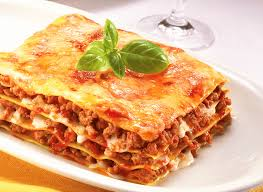
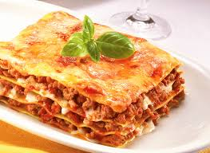
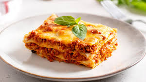
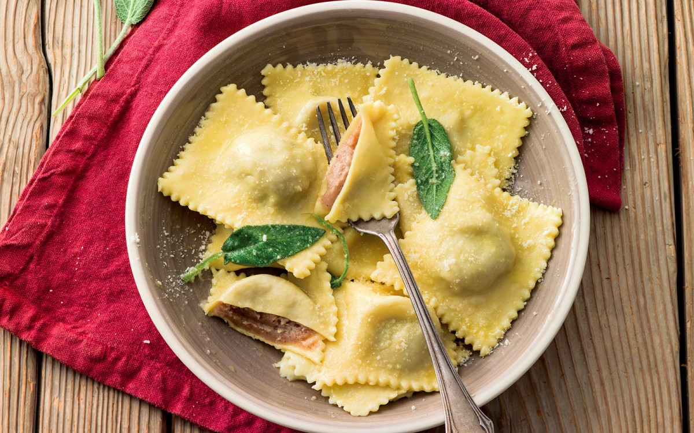
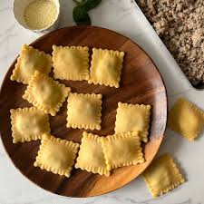
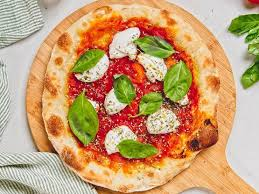
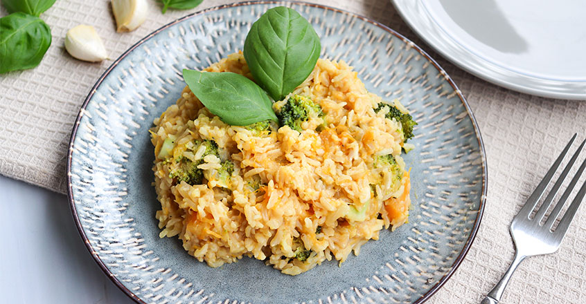

Food originating from Italy
The plate contains: Ragú, (base), Pasta, Ragú, Bechamel, Parmesano, all these in layers.



| Index | Languages | Gastronomy | Lugares | Economy | Form |
Food originating from Italy |
|||||
| Foods: | |||||
| Lasagna: | |||||
The plate contains: Ragú, (base), Pasta, Ragú, Bechamel, Parmesano, all these in layers. |
|||||
 |
 | |
|||
| Ravioli pasta: | |||||
| The plate contains: Two layers of thin dough (usually made from durum wheat semolina or "00" flour and egg) enclosing a filling that can be cheese (ricotta, parmesan), meats (veal, beef), vegetables (spinach) or even tofu and fish. | |||||
|  |  | |
|||
| Neapolitan pizza: | |||||
| The plate contains: Tomato, garlic, oregano and olive oil - or with the margherita - with tomato, mozzarella, olive oil and basil. | |||||
|  | |
|
|||
| Risotto rice: | |||||
| The plate contains: Risotto rice, beef broth, small onion, dry white wine, saffron powder, butter, and Parmesan cheese. | |||||
|
 | |
|||